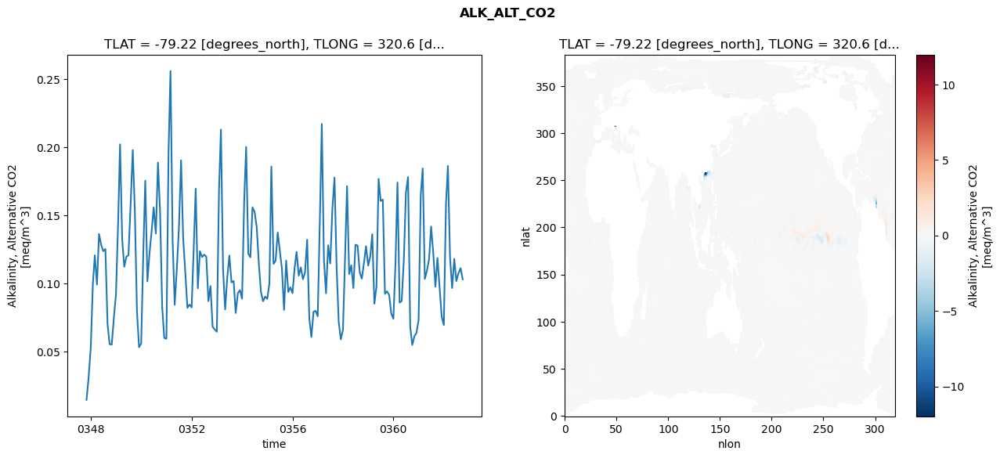
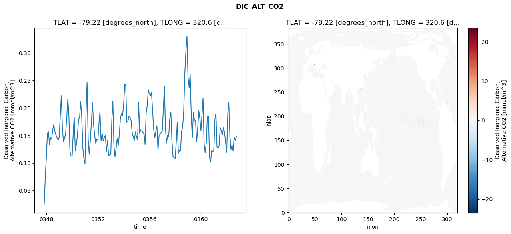
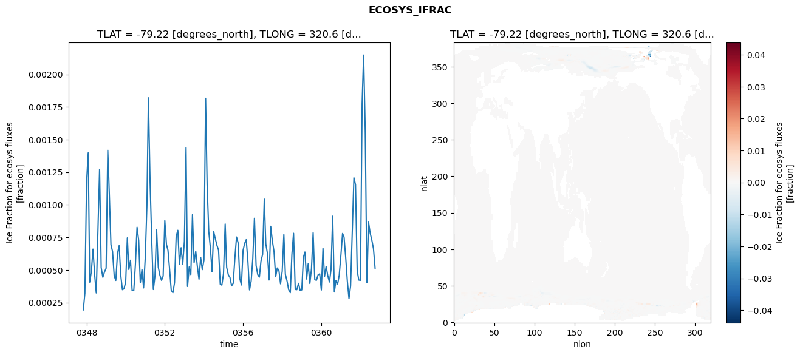
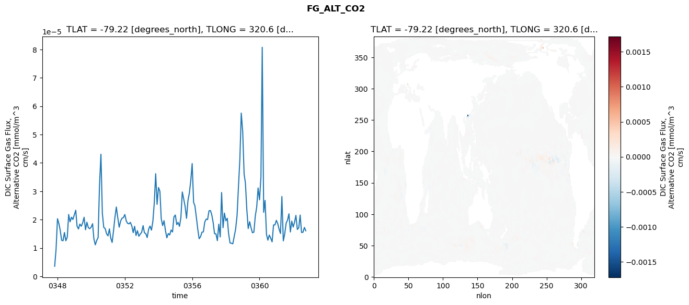

glb-dor_North_Atlantic_basin_025_1999-10-01_00103#
Simulation details#
Case: smyle.cdr-atlas-v0.glb-dor_North_Atlantic_basin_025_1999-10-01_00103.001
Basin: North_Atlantic_basin
Polygon: 25.0
Start date: 1999-10
Show code cell source Hide code cell source
import xarray as xr
import matplotlib.pyplot as plt
Show code cell source Hide code cell source
zarr_store = "/path/to/zarr/store"
# Parameters
zarr_store = "/global/cfs/projectdirs/m4746/Projects/Ocean-CDR-Atlas-v0/data/validation/smyle.cdr-atlas-v0.glb-dor_North_Atlantic_basin_025_1999-10-01_00103.001.validation.zarr"
Show code cell source Hide code cell source
%%time
ds_o = xr.open_zarr(zarr_store).compute()
ds_o
CPU times: user 699 ms, sys: 485 ms, total: 1.18 s
Wall time: 1.46 s
<xarray.Dataset> Size: 2MB
Dimensions: (nlat: 384, nlon: 320, time: 180)
Coordinates:
TLAT float64 8B -79.22
TLONG float64 8B 320.6
ULAT float64 8B -78.95
ULONG float64 8B 321.1
* time (time) object 1kB 0347-11-01 00:00:00 ... 0362-10-01 0...
z_t float32 4B 500.0
Dimensions without coordinates: nlat, nlon
Data variables:
ALK_ALT_CO2_diff (nlat, nlon) float32 492kB nan nan nan ... nan nan nan
ALK_ALT_CO2_rmse (time) float64 1kB 0.01466 0.03098 ... 0.1113 0.1031
DIC_ALT_CO2_diff (nlat, nlon) float32 492kB nan nan nan ... nan nan nan
DIC_ALT_CO2_rmse (time) float64 1kB 0.02506 0.07294 ... 0.1412 0.1478
ECOSYS_IFRAC_diff (nlat, nlon) float32 492kB nan nan nan ... nan nan nan
ECOSYS_IFRAC_rmse (time) float64 1kB 0.0001933 0.0003208 ... 0.0005135
FG_ALT_CO2_diff (nlat, nlon) float32 492kB nan nan nan ... nan nan nan
FG_ALT_CO2_rmse (time) float64 1kB 3.563e-06 9.488e-06 ... 1.607e-05xarray.Dataset
- nlat: 384
- nlon: 320
- time: 180
- TLAT()float64-79.22
- long_name :
- array of t-grid latitudes
- units :
- degrees_north
array(-79.22052261)
- TLONG()float64320.6
- long_name :
- array of t-grid longitudes
- units :
- degrees_east
array(320.56250892)
- ULAT()float64-78.95
- long_name :
- array of u-grid latitudes
- units :
- degrees_north
array(-78.95289509)
- ULONG()float64321.1
- long_name :
- array of u-grid longitudes
- units :
- degrees_east
array(321.12500894)
- time(time)object0347-11-01 00:00:00 ... 0362-10-...
- bounds :
- time_bound
- long_name :
- time
array([cftime.DatetimeNoLeap(347, 11, 1, 0, 0, 0, 0, has_year_zero=True), cftime.DatetimeNoLeap(347, 12, 1, 0, 0, 0, 0, has_year_zero=True), cftime.DatetimeNoLeap(348, 1, 1, 0, 0, 0, 0, has_year_zero=True), cftime.DatetimeNoLeap(348, 2, 1, 0, 0, 0, 0, has_year_zero=True), cftime.DatetimeNoLeap(348, 3, 1, 0, 0, 0, 0, has_year_zero=True), cftime.DatetimeNoLeap(348, 4, 1, 0, 0, 0, 0, has_year_zero=True), cftime.DatetimeNoLeap(348, 5, 1, 0, 0, 0, 0, has_year_zero=True), cftime.DatetimeNoLeap(348, 6, 1, 0, 0, 0, 0, has_year_zero=True), cftime.DatetimeNoLeap(348, 7, 1, 0, 0, 0, 0, has_year_zero=True), cftime.DatetimeNoLeap(348, 8, 1, 0, 0, 0, 0, has_year_zero=True), cftime.DatetimeNoLeap(348, 9, 1, 0, 0, 0, 0, has_year_zero=True), cftime.DatetimeNoLeap(348, 10, 1, 0, 0, 0, 0, has_year_zero=True), cftime.DatetimeNoLeap(348, 11, 1, 0, 0, 0, 0, has_year_zero=True), cftime.DatetimeNoLeap(348, 12, 1, 0, 0, 0, 0, has_year_zero=True), cftime.DatetimeNoLeap(349, 1, 1, 0, 0, 0, 0, has_year_zero=True), cftime.DatetimeNoLeap(349, 2, 1, 0, 0, 0, 0, has_year_zero=True), cftime.DatetimeNoLeap(349, 3, 1, 0, 0, 0, 0, has_year_zero=True), cftime.DatetimeNoLeap(349, 4, 1, 0, 0, 0, 0, has_year_zero=True), cftime.DatetimeNoLeap(349, 5, 1, 0, 0, 0, 0, has_year_zero=True), cftime.DatetimeNoLeap(349, 6, 1, 0, 0, 0, 0, has_year_zero=True), cftime.DatetimeNoLeap(349, 7, 1, 0, 0, 0, 0, has_year_zero=True), cftime.DatetimeNoLeap(349, 8, 1, 0, 0, 0, 0, has_year_zero=True), cftime.DatetimeNoLeap(349, 9, 1, 0, 0, 0, 0, has_year_zero=True), cftime.DatetimeNoLeap(349, 10, 1, 0, 0, 0, 0, has_year_zero=True), cftime.DatetimeNoLeap(349, 11, 1, 0, 0, 0, 0, has_year_zero=True), cftime.DatetimeNoLeap(349, 12, 1, 0, 0, 0, 0, has_year_zero=True), cftime.DatetimeNoLeap(350, 1, 1, 0, 0, 0, 0, has_year_zero=True), cftime.DatetimeNoLeap(350, 2, 1, 0, 0, 0, 0, has_year_zero=True), cftime.DatetimeNoLeap(350, 3, 1, 0, 0, 0, 0, has_year_zero=True), cftime.DatetimeNoLeap(350, 4, 1, 0, 0, 0, 0, has_year_zero=True), cftime.DatetimeNoLeap(350, 5, 1, 0, 0, 0, 0, has_year_zero=True), cftime.DatetimeNoLeap(350, 6, 1, 0, 0, 0, 0, has_year_zero=True), cftime.DatetimeNoLeap(350, 7, 1, 0, 0, 0, 0, has_year_zero=True), cftime.DatetimeNoLeap(350, 8, 1, 0, 0, 0, 0, has_year_zero=True), cftime.DatetimeNoLeap(350, 9, 1, 0, 0, 0, 0, has_year_zero=True), cftime.DatetimeNoLeap(350, 10, 1, 0, 0, 0, 0, has_year_zero=True), cftime.DatetimeNoLeap(350, 11, 1, 0, 0, 0, 0, has_year_zero=True), cftime.DatetimeNoLeap(350, 12, 1, 0, 0, 0, 0, has_year_zero=True), cftime.DatetimeNoLeap(351, 1, 1, 0, 0, 0, 0, has_year_zero=True), cftime.DatetimeNoLeap(351, 2, 1, 0, 0, 0, 0, has_year_zero=True), cftime.DatetimeNoLeap(351, 3, 1, 0, 0, 0, 0, has_year_zero=True), cftime.DatetimeNoLeap(351, 4, 1, 0, 0, 0, 0, has_year_zero=True), cftime.DatetimeNoLeap(351, 5, 1, 0, 0, 0, 0, has_year_zero=True), cftime.DatetimeNoLeap(351, 6, 1, 0, 0, 0, 0, has_year_zero=True), cftime.DatetimeNoLeap(351, 7, 1, 0, 0, 0, 0, has_year_zero=True), cftime.DatetimeNoLeap(351, 8, 1, 0, 0, 0, 0, has_year_zero=True), cftime.DatetimeNoLeap(351, 9, 1, 0, 0, 0, 0, has_year_zero=True), cftime.DatetimeNoLeap(351, 10, 1, 0, 0, 0, 0, has_year_zero=True), cftime.DatetimeNoLeap(351, 11, 1, 0, 0, 0, 0, has_year_zero=True), cftime.DatetimeNoLeap(351, 12, 1, 0, 0, 0, 0, has_year_zero=True), cftime.DatetimeNoLeap(352, 1, 1, 0, 0, 0, 0, has_year_zero=True), cftime.DatetimeNoLeap(352, 2, 1, 0, 0, 0, 0, has_year_zero=True), cftime.DatetimeNoLeap(352, 3, 1, 0, 0, 0, 0, has_year_zero=True), cftime.DatetimeNoLeap(352, 4, 1, 0, 0, 0, 0, has_year_zero=True), cftime.DatetimeNoLeap(352, 5, 1, 0, 0, 0, 0, has_year_zero=True), cftime.DatetimeNoLeap(352, 6, 1, 0, 0, 0, 0, has_year_zero=True), cftime.DatetimeNoLeap(352, 7, 1, 0, 0, 0, 0, has_year_zero=True), cftime.DatetimeNoLeap(352, 8, 1, 0, 0, 0, 0, has_year_zero=True), cftime.DatetimeNoLeap(352, 9, 1, 0, 0, 0, 0, has_year_zero=True), cftime.DatetimeNoLeap(352, 10, 1, 0, 0, 0, 0, has_year_zero=True), cftime.DatetimeNoLeap(352, 11, 1, 0, 0, 0, 0, has_year_zero=True), cftime.DatetimeNoLeap(352, 12, 1, 0, 0, 0, 0, has_year_zero=True), cftime.DatetimeNoLeap(353, 1, 1, 0, 0, 0, 0, has_year_zero=True), cftime.DatetimeNoLeap(353, 2, 1, 0, 0, 0, 0, has_year_zero=True), cftime.DatetimeNoLeap(353, 3, 1, 0, 0, 0, 0, has_year_zero=True), cftime.DatetimeNoLeap(353, 4, 1, 0, 0, 0, 0, has_year_zero=True), cftime.DatetimeNoLeap(353, 5, 1, 0, 0, 0, 0, has_year_zero=True), cftime.DatetimeNoLeap(353, 6, 1, 0, 0, 0, 0, has_year_zero=True), cftime.DatetimeNoLeap(353, 7, 1, 0, 0, 0, 0, has_year_zero=True), cftime.DatetimeNoLeap(353, 8, 1, 0, 0, 0, 0, has_year_zero=True), cftime.DatetimeNoLeap(353, 9, 1, 0, 0, 0, 0, has_year_zero=True), cftime.DatetimeNoLeap(353, 10, 1, 0, 0, 0, 0, has_year_zero=True), cftime.DatetimeNoLeap(353, 11, 1, 0, 0, 0, 0, has_year_zero=True), cftime.DatetimeNoLeap(353, 12, 1, 0, 0, 0, 0, has_year_zero=True), cftime.DatetimeNoLeap(354, 1, 1, 0, 0, 0, 0, has_year_zero=True), cftime.DatetimeNoLeap(354, 2, 1, 0, 0, 0, 0, has_year_zero=True), cftime.DatetimeNoLeap(354, 3, 1, 0, 0, 0, 0, has_year_zero=True), cftime.DatetimeNoLeap(354, 4, 1, 0, 0, 0, 0, has_year_zero=True), cftime.DatetimeNoLeap(354, 5, 1, 0, 0, 0, 0, has_year_zero=True), cftime.DatetimeNoLeap(354, 6, 1, 0, 0, 0, 0, has_year_zero=True), cftime.DatetimeNoLeap(354, 7, 1, 0, 0, 0, 0, has_year_zero=True), cftime.DatetimeNoLeap(354, 8, 1, 0, 0, 0, 0, has_year_zero=True), cftime.DatetimeNoLeap(354, 9, 1, 0, 0, 0, 0, has_year_zero=True), cftime.DatetimeNoLeap(354, 10, 1, 0, 0, 0, 0, has_year_zero=True), cftime.DatetimeNoLeap(354, 11, 1, 0, 0, 0, 0, has_year_zero=True), cftime.DatetimeNoLeap(354, 12, 1, 0, 0, 0, 0, has_year_zero=True), cftime.DatetimeNoLeap(355, 1, 1, 0, 0, 0, 0, has_year_zero=True), cftime.DatetimeNoLeap(355, 2, 1, 0, 0, 0, 0, has_year_zero=True), cftime.DatetimeNoLeap(355, 3, 1, 0, 0, 0, 0, has_year_zero=True), cftime.DatetimeNoLeap(355, 4, 1, 0, 0, 0, 0, has_year_zero=True), cftime.DatetimeNoLeap(355, 5, 1, 0, 0, 0, 0, has_year_zero=True), cftime.DatetimeNoLeap(355, 6, 1, 0, 0, 0, 0, has_year_zero=True), cftime.DatetimeNoLeap(355, 7, 1, 0, 0, 0, 0, has_year_zero=True), cftime.DatetimeNoLeap(355, 8, 1, 0, 0, 0, 0, has_year_zero=True), cftime.DatetimeNoLeap(355, 9, 1, 0, 0, 0, 0, has_year_zero=True), cftime.DatetimeNoLeap(355, 10, 1, 0, 0, 0, 0, has_year_zero=True), cftime.DatetimeNoLeap(355, 11, 1, 0, 0, 0, 0, has_year_zero=True), cftime.DatetimeNoLeap(355, 12, 1, 0, 0, 0, 0, has_year_zero=True), cftime.DatetimeNoLeap(356, 1, 1, 0, 0, 0, 0, has_year_zero=True), cftime.DatetimeNoLeap(356, 2, 1, 0, 0, 0, 0, has_year_zero=True), cftime.DatetimeNoLeap(356, 3, 1, 0, 0, 0, 0, has_year_zero=True), cftime.DatetimeNoLeap(356, 4, 1, 0, 0, 0, 0, has_year_zero=True), cftime.DatetimeNoLeap(356, 5, 1, 0, 0, 0, 0, has_year_zero=True), cftime.DatetimeNoLeap(356, 6, 1, 0, 0, 0, 0, has_year_zero=True), cftime.DatetimeNoLeap(356, 7, 1, 0, 0, 0, 0, has_year_zero=True), cftime.DatetimeNoLeap(356, 8, 1, 0, 0, 0, 0, has_year_zero=True), cftime.DatetimeNoLeap(356, 9, 1, 0, 0, 0, 0, has_year_zero=True), cftime.DatetimeNoLeap(356, 10, 1, 0, 0, 0, 0, has_year_zero=True), cftime.DatetimeNoLeap(356, 11, 1, 0, 0, 0, 0, has_year_zero=True), cftime.DatetimeNoLeap(356, 12, 1, 0, 0, 0, 0, has_year_zero=True), cftime.DatetimeNoLeap(357, 1, 1, 0, 0, 0, 0, has_year_zero=True), cftime.DatetimeNoLeap(357, 2, 1, 0, 0, 0, 0, has_year_zero=True), cftime.DatetimeNoLeap(357, 3, 1, 0, 0, 0, 0, has_year_zero=True), cftime.DatetimeNoLeap(357, 4, 1, 0, 0, 0, 0, has_year_zero=True), cftime.DatetimeNoLeap(357, 5, 1, 0, 0, 0, 0, has_year_zero=True), cftime.DatetimeNoLeap(357, 6, 1, 0, 0, 0, 0, has_year_zero=True), cftime.DatetimeNoLeap(357, 7, 1, 0, 0, 0, 0, has_year_zero=True), cftime.DatetimeNoLeap(357, 8, 1, 0, 0, 0, 0, has_year_zero=True), cftime.DatetimeNoLeap(357, 9, 1, 0, 0, 0, 0, has_year_zero=True), cftime.DatetimeNoLeap(357, 10, 1, 0, 0, 0, 0, has_year_zero=True), cftime.DatetimeNoLeap(357, 11, 1, 0, 0, 0, 0, has_year_zero=True), cftime.DatetimeNoLeap(357, 12, 1, 0, 0, 0, 0, has_year_zero=True), cftime.DatetimeNoLeap(358, 1, 1, 0, 0, 0, 0, has_year_zero=True), cftime.DatetimeNoLeap(358, 2, 1, 0, 0, 0, 0, has_year_zero=True), cftime.DatetimeNoLeap(358, 3, 1, 0, 0, 0, 0, has_year_zero=True), cftime.DatetimeNoLeap(358, 4, 1, 0, 0, 0, 0, has_year_zero=True), cftime.DatetimeNoLeap(358, 5, 1, 0, 0, 0, 0, has_year_zero=True), cftime.DatetimeNoLeap(358, 6, 1, 0, 0, 0, 0, has_year_zero=True), cftime.DatetimeNoLeap(358, 7, 1, 0, 0, 0, 0, has_year_zero=True), cftime.DatetimeNoLeap(358, 8, 1, 0, 0, 0, 0, has_year_zero=True), cftime.DatetimeNoLeap(358, 9, 1, 0, 0, 0, 0, has_year_zero=True), cftime.DatetimeNoLeap(358, 10, 1, 0, 0, 0, 0, has_year_zero=True), cftime.DatetimeNoLeap(358, 11, 1, 0, 0, 0, 0, has_year_zero=True), cftime.DatetimeNoLeap(358, 12, 1, 0, 0, 0, 0, has_year_zero=True), cftime.DatetimeNoLeap(359, 1, 1, 0, 0, 0, 0, has_year_zero=True), cftime.DatetimeNoLeap(359, 2, 1, 0, 0, 0, 0, has_year_zero=True), cftime.DatetimeNoLeap(359, 3, 1, 0, 0, 0, 0, has_year_zero=True), cftime.DatetimeNoLeap(359, 4, 1, 0, 0, 0, 0, has_year_zero=True), cftime.DatetimeNoLeap(359, 5, 1, 0, 0, 0, 0, has_year_zero=True), cftime.DatetimeNoLeap(359, 6, 1, 0, 0, 0, 0, has_year_zero=True), cftime.DatetimeNoLeap(359, 7, 1, 0, 0, 0, 0, has_year_zero=True), cftime.DatetimeNoLeap(359, 8, 1, 0, 0, 0, 0, has_year_zero=True), cftime.DatetimeNoLeap(359, 9, 1, 0, 0, 0, 0, has_year_zero=True), cftime.DatetimeNoLeap(359, 10, 1, 0, 0, 0, 0, has_year_zero=True), cftime.DatetimeNoLeap(359, 11, 1, 0, 0, 0, 0, has_year_zero=True), cftime.DatetimeNoLeap(359, 12, 1, 0, 0, 0, 0, has_year_zero=True), cftime.DatetimeNoLeap(360, 1, 1, 0, 0, 0, 0, has_year_zero=True), cftime.DatetimeNoLeap(360, 2, 1, 0, 0, 0, 0, has_year_zero=True), cftime.DatetimeNoLeap(360, 3, 1, 0, 0, 0, 0, has_year_zero=True), cftime.DatetimeNoLeap(360, 4, 1, 0, 0, 0, 0, has_year_zero=True), cftime.DatetimeNoLeap(360, 5, 1, 0, 0, 0, 0, has_year_zero=True), cftime.DatetimeNoLeap(360, 6, 1, 0, 0, 0, 0, has_year_zero=True), cftime.DatetimeNoLeap(360, 7, 1, 0, 0, 0, 0, has_year_zero=True), cftime.DatetimeNoLeap(360, 8, 1, 0, 0, 0, 0, has_year_zero=True), cftime.DatetimeNoLeap(360, 9, 1, 0, 0, 0, 0, has_year_zero=True), cftime.DatetimeNoLeap(360, 10, 1, 0, 0, 0, 0, has_year_zero=True), cftime.DatetimeNoLeap(360, 11, 1, 0, 0, 0, 0, has_year_zero=True), cftime.DatetimeNoLeap(360, 12, 1, 0, 0, 0, 0, has_year_zero=True), cftime.DatetimeNoLeap(361, 1, 1, 0, 0, 0, 0, has_year_zero=True), cftime.DatetimeNoLeap(361, 2, 1, 0, 0, 0, 0, has_year_zero=True), cftime.DatetimeNoLeap(361, 3, 1, 0, 0, 0, 0, has_year_zero=True), cftime.DatetimeNoLeap(361, 4, 1, 0, 0, 0, 0, has_year_zero=True), cftime.DatetimeNoLeap(361, 5, 1, 0, 0, 0, 0, has_year_zero=True), cftime.DatetimeNoLeap(361, 6, 1, 0, 0, 0, 0, has_year_zero=True), cftime.DatetimeNoLeap(361, 7, 1, 0, 0, 0, 0, has_year_zero=True), cftime.DatetimeNoLeap(361, 8, 1, 0, 0, 0, 0, has_year_zero=True), cftime.DatetimeNoLeap(361, 9, 1, 0, 0, 0, 0, has_year_zero=True), cftime.DatetimeNoLeap(361, 10, 1, 0, 0, 0, 0, has_year_zero=True), cftime.DatetimeNoLeap(361, 11, 1, 0, 0, 0, 0, has_year_zero=True), cftime.DatetimeNoLeap(361, 12, 1, 0, 0, 0, 0, has_year_zero=True), cftime.DatetimeNoLeap(362, 1, 1, 0, 0, 0, 0, has_year_zero=True), cftime.DatetimeNoLeap(362, 2, 1, 0, 0, 0, 0, has_year_zero=True), cftime.DatetimeNoLeap(362, 3, 1, 0, 0, 0, 0, has_year_zero=True), cftime.DatetimeNoLeap(362, 4, 1, 0, 0, 0, 0, has_year_zero=True), cftime.DatetimeNoLeap(362, 5, 1, 0, 0, 0, 0, has_year_zero=True), cftime.DatetimeNoLeap(362, 6, 1, 0, 0, 0, 0, has_year_zero=True), cftime.DatetimeNoLeap(362, 7, 1, 0, 0, 0, 0, has_year_zero=True), cftime.DatetimeNoLeap(362, 8, 1, 0, 0, 0, 0, has_year_zero=True), cftime.DatetimeNoLeap(362, 9, 1, 0, 0, 0, 0, has_year_zero=True), cftime.DatetimeNoLeap(362, 10, 1, 0, 0, 0, 0, has_year_zero=True)], dtype=object) - z_t()float32500.0
- long_name :
- depth from surface to midpoint of layer
- positive :
- down
- units :
- centimeters
- valid_max :
- 537500.0
- valid_min :
- 500.0
array(500., dtype=float32)
- ALK_ALT_CO2_diff(nlat, nlon)float32nan nan nan nan ... nan nan nan nan
- cell_methods :
- time: mean
- grid_loc :
- 3111
- long_name :
- Alkalinity, Alternative CO2
- units :
- meq/m^3
array([[ nan, nan, nan, ..., nan, nan, nan], [ nan, nan, nan, ..., nan, nan, nan], [0.01416016, 0.01220703, 0.00415039, ..., nan, nan, nan], ..., [ nan, nan, nan, ..., nan, nan, nan], [ nan, nan, nan, ..., nan, nan, nan], [ nan, nan, nan, ..., nan, nan, nan]], dtype=float32) - ALK_ALT_CO2_rmse(time)float640.01466 0.03098 ... 0.1113 0.1031
- cell_methods :
- time: mean
- grid_loc :
- 3111
- long_name :
- Alkalinity, Alternative CO2
- units :
- meq/m^3
array([0.01466087, 0.03097952, 0.05275081, 0.09995587, 0.12073199, 0.09922503, 0.13638081, 0.12836456, 0.1237444 , 0.12536925, 0.07043749, 0.05555216, 0.05520037, 0.07470826, 0.09206353, 0.1442512 , 0.20217239, 0.13239679, 0.112317 , 0.11969252, 0.12084106, 0.1579307 , 0.1979946 , 0.1537879 , 0.07962478, 0.05330234, 0.05599164, 0.12376929, 0.17547475, 0.10160405, 0.12192657, 0.13850163, 0.15588668, 0.13667819, 0.18872614, 0.15332719, 0.08279604, 0.0600613 , 0.05947645, 0.19655643, 0.25596197, 0.13147011, 0.08440153, 0.1109699 , 0.1406879 , 0.19044533, 0.1328907 , 0.10853152, 0.08222077, 0.08453518, 0.08250754, 0.1270127 , 0.16960143, 0.09652311, 0.1237096 , 0.1194953 , 0.12120241, 0.11977318, 0.08711115, 0.0981473 , 0.0682722 , 0.06635182, 0.06466389, 0.16801051, 0.2129759 , 0.11018433, 0.08098791, 0.10466695, 0.12058491, 0.10088505, 0.10189244, 0.07842767, 0.09297054, 0.09519374, 0.08886832, 0.16150859, 0.20026191, 0.12199752, 0.11927297, 0.15594406, 0.15264299, 0.14136258, 0.11453599, 0.09378425, 0.0869858 , 0.09043277, 0.08880827, 0.10013227, 0.18588191, 0.11446389, 0.11664069, 0.13745205, 0.12449713, 0.11065654, 0.08068143, 0.11683122, 0.09384024, 0.09733287, 0.09289728, 0.11169387, 0.12328464, 0.10576007, 0.1118427 , 0.10317307, 0.1082219 , 0.13218786, 0.07459708, 0.06071916, 0.07931419, 0.07999879, 0.07599185, 0.14712281, 0.21713586, 0.11730834, 0.09284328, 0.1280336 , 0.1148073 , 0.15498635, 0.17781818, 0.11225624, 0.07169385, 0.05906086, 0.06603428, 0.12019693, 0.17148252, 0.10694886, 0.1133595 , 0.09668143, 0.1284765 , 0.12790976, 0.1080864 , 0.1035509 , 0.11501477, 0.12738953, 0.11319102, 0.12022907, 0.13626106, 0.08521863, 0.09773753, 0.17686464, 0.16058585, 0.16158999, 0.09243654, 0.09429614, 0.09155857, 0.07809579, 0.07412139, 0.11613043, 0.17417033, 0.0860384 , 0.08715768, 0.11728448, 0.16647602, 0.1781156 , 0.06854369, 0.05493832, 0.06136072, 0.06390166, 0.07332896, 0.16508888, 0.18447359, 0.10343399, 0.10930168, 0.11779627, 0.14190961, 0.12238441, 0.09771496, 0.11879763, 0.09672166, 0.07561351, 0.06953963, 0.1585218 , 0.18630955, 0.11860632, 0.09668833, 0.11813026, 0.10181173, 0.10770414, 0.11131066, 0.10307573]) - DIC_ALT_CO2_diff(nlat, nlon)float32nan nan nan nan ... nan nan nan nan
- cell_methods :
- time: mean
- grid_loc :
- 3111
- long_name :
- Dissolved Inorganic Carbon, Alternative CO2
- units :
- mmol/m^3
array([[ nan, nan, nan, ..., nan, nan, nan], [ nan, nan, nan, ..., nan, nan, nan], [ 0.0078125 , 0.00830078, -0.00073242, ..., nan, nan, nan], ..., [ nan, nan, nan, ..., nan, nan, nan], [ nan, nan, nan, ..., nan, nan, nan], [ nan, nan, nan, ..., nan, nan, nan]], dtype=float32) - DIC_ALT_CO2_rmse(time)float640.02506 0.07294 ... 0.1412 0.1478
- cell_methods :
- time: mean
- grid_loc :
- 3111
- long_name :
- Dissolved Inorganic Carbon, Alternative CO2
- units :
- mmol/m^3
array([0.02506142, 0.07294318, 0.11110826, 0.15342067, 0.15702373, 0.13345769, 0.14608088, 0.14444402, 0.16108191, 0.17000864, 0.15649332, 0.15085384, 0.14633086, 0.14154267, 0.1474895 , 0.18836905, 0.22241353, 0.16246069, 0.1390468 , 0.14497933, 0.15264237, 0.18150921, 0.21626502, 0.18706562, 0.12128419, 0.11286185, 0.11237731, 0.1530128 , 0.18380174, 0.12224228, 0.13344143, 0.15018857, 0.17894021, 0.18243272, 0.21159862, 0.18366004, 0.12709146, 0.10850431, 0.09859155, 0.19761353, 0.24637118, 0.14290533, 0.11600214, 0.14213158, 0.17244491, 0.20929142, 0.17076566, 0.15084516, 0.13593861, 0.1434911 , 0.14258562, 0.17208541, 0.19311905, 0.14005645, 0.15373363, 0.1404098 , 0.14583681, 0.15009033, 0.12103884, 0.14132601, 0.11330312, 0.11510828, 0.11556431, 0.17871426, 0.21252705, 0.13115291, 0.11143256, 0.12624801, 0.14405602, 0.13208684, 0.1523091 , 0.1814828 , 0.18971918, 0.18643752, 0.20672666, 0.24364284, 0.24092978, 0.17409013, 0.1757766 , 0.18526414, 0.18298376, 0.17649267, 0.1549075 , 0.14705134, 0.14138046, 0.15689918, 0.14662032, 0.14247034, 0.21027869, 0.15372203, 0.16066387, 0.15964655, 0.15512432, 0.15384 , 0.13354562, 0.19186492, 0.20403942, 0.23336626, 0.22514971, 0.22282628, 0.22808081, 0.19595811, 0.1627951 , 0.14571638, 0.15695232, 0.16786794, 0.12476855, 0.14895383, 0.15269461, 0.15515448, 0.15860076, 0.19885216, 0.23940897, 0.16263098, 0.13643756, 0.15073629, 0.14802386, 0.1795487 , 0.19219634, 0.14056029, 0.11156403, 0.11037364, 0.10805615, 0.1393349 , 0.17333841, 0.11803461, 0.12232094, 0.12247249, 0.15765699, 0.16518172, 0.19528626, 0.26382165, 0.30321431, 0.330369 , 0.25442057, 0.23740993, 0.26145063, 0.18765778, 0.14636607, 0.19136792, 0.1781285 , 0.17649929, 0.13835124, 0.16257424, 0.19493364, 0.1816103 , 0.15875033, 0.18875082, 0.21819206, 0.13377864, 0.11879922, 0.13677513, 0.18386921, 0.18536987, 0.11016456, 0.10165274, 0.12232687, 0.12072244, 0.12324418, 0.17955223, 0.19030923, 0.12939938, 0.12703486, 0.13189962, 0.16444218, 0.15780462, 0.15118591, 0.1643919 , 0.155377 , 0.13767379, 0.11946055, 0.18990925, 0.20952755, 0.15025848, 0.12485952, 0.13274236, 0.12192984, 0.14723733, 0.14116747, 0.1478104 ]) - ECOSYS_IFRAC_diff(nlat, nlon)float32nan nan nan nan ... nan nan nan nan
- cell_methods :
- time: mean
- grid_loc :
- 2110
- long_name :
- Ice Fraction for ecosys fluxes
- units :
- fraction
array([[ nan, nan, nan, ..., nan, nan, nan], [ nan, nan, nan, ..., nan, nan, nan], [1.0132790e-06, 2.6822090e-06, 3.5762787e-06, ..., nan, nan, nan], ..., [ nan, nan, nan, ..., nan, nan, nan], [ nan, nan, nan, ..., nan, nan, nan], [ nan, nan, nan, ..., nan, nan, nan]], dtype=float32) - ECOSYS_IFRAC_rmse(time)float640.0001933 0.0003208 ... 0.0005135
- cell_methods :
- time: mean
- grid_loc :
- 2110
- long_name :
- Ice Fraction for ecosys fluxes
- units :
- fraction
array([0.00019327, 0.0003208 , 0.00116971, 0.00139803, 0.00040613, 0.00048977, 0.00065977, 0.00046302, 0.00032338, 0.00079466, 0.00127179, 0.00051792, 0.00044374, 0.00048322, 0.00051309, 0.00141838, 0.00109301, 0.0006935 , 0.00064164, 0.00045441, 0.00041936, 0.00062538, 0.00068627, 0.00045945, 0.00034843, 0.0003554 , 0.0004083 , 0.00074588, 0.0005032 , 0.00057447, 0.00034164, 0.00034168, 0.00053787, 0.0008276 , 0.00072583, 0.00040178, 0.00050396, 0.00036204, 0.00059349, 0.00099047, 0.00182052, 0.00117786, 0.00074127, 0.00034984, 0.00045117, 0.00080941, 0.00052116, 0.00045986, 0.00041989, 0.00045416, 0.00087868, 0.00069512, 0.00065038, 0.00050193, 0.00034316, 0.00032524, 0.00040114, 0.00075779, 0.00080375, 0.00054109, 0.00067034, 0.00054237, 0.00072023, 0.0014379 , 0.00037363, 0.0005231 , 0.00046415, 0.00092449, 0.00055595, 0.0006432 , 0.00052376, 0.00042884, 0.00059637, 0.00050234, 0.00057529, 0.00181678, 0.00115475, 0.00079487, 0.00066951, 0.00048589, 0.00079503, 0.00073948, 0.00068804, 0.00065128, 0.00039097, 0.00038341, 0.0004709 , 0.00085246, 0.0005199 , 0.00046213, 0.00044312, 0.00037778, 0.000397 , 0.00058916, 0.00075274, 0.00070668, 0.00043396, 0.0003846 , 0.00065083, 0.00070528, 0.00073222, 0.00056607, 0.00034701, 0.00041404, 0.00058416, 0.00089635, 0.00053369, 0.00046528, 0.00044506, 0.0005678 , 0.00061974, 0.00104327, 0.0007 , 0.00062563, 0.00042306, 0.00083487, 0.0007231 , 0.0006426 , 0.00044782, 0.000515 , 0.00049542, 0.00039361, 0.00048884, 0.00077147, 0.00046662, 0.00041554, 0.00034902, 0.00032539, 0.00062043, 0.00078096, 0.00035028, 0.00034837, 0.0003975 , 0.00034362, 0.00034665, 0.00059773, 0.00063766, 0.00043012, 0.00054734, 0.00039589, 0.00051012, 0.00078507, 0.00042532, 0.00042022, 0.00046199, 0.00047002, 0.00034589, 0.00066557, 0.00045018, 0.00052713, 0.0004567 , 0.00040724, 0.00050246, 0.00091243, 0.00033099, 0.0004185 , 0.0003918 , 0.00046042, 0.00061297, 0.00078001, 0.00075273, 0.00059346, 0.00041583, 0.0002802 , 0.00037608, 0.00079812, 0.00120695, 0.00115339, 0.0004943 , 0.00042242, 0.00041992, 0.00177669, 0.00214818, 0.00154733, 0.000402 , 0.00086696, 0.00078275, 0.00072879, 0.00066274, 0.00051351]) - FG_ALT_CO2_diff(nlat, nlon)float32nan nan nan nan ... nan nan nan nan
- cell_methods :
- time: mean
- grid_loc :
- 2110
- long_name :
- DIC Surface Gas Flux, Alternative CO2
- units :
- mmol/m^3 cm/s
array([[ nan, nan, nan, ..., nan, nan, nan], [ nan, nan, nan, ..., nan, nan, nan], [3.9252086e-09, 5.9319234e-09, 4.1057477e-09, ..., nan, nan, nan], ..., [ nan, nan, nan, ..., nan, nan, nan], [ nan, nan, nan, ..., nan, nan, nan], [ nan, nan, nan, ..., nan, nan, nan]], dtype=float32) - FG_ALT_CO2_rmse(time)float643.563e-06 9.488e-06 ... 1.607e-05
- cell_methods :
- time: mean
- grid_loc :
- 2110
- long_name :
- DIC Surface Gas Flux, Alternative CO2
- units :
- mmol/m^3 cm/s
array([3.56269789e-06, 9.48793200e-06, 2.03200935e-05, 1.86063564e-05, 1.62577448e-05, 1.27329107e-05, 1.25530203e-05, 1.54671154e-05, 1.25419250e-05, 1.38282512e-05, 2.18091930e-05, 1.92415411e-05, 2.08503506e-05, 2.00592786e-05, 2.16776881e-05, 2.33202327e-05, 1.77477607e-05, 1.66983427e-05, 1.84451080e-05, 1.76722182e-05, 1.88669223e-05, 2.08379324e-05, 1.64481217e-05, 1.90927778e-05, 1.71865024e-05, 1.68019600e-05, 1.73565707e-05, 1.85688831e-05, 1.32572784e-05, 1.11185631e-05, 1.26666284e-05, 1.36847956e-05, 3.20532406e-05, 4.30515420e-05, 2.22059217e-05, 1.72795301e-05, 1.68572818e-05, 1.50322815e-05, 1.42892248e-05, 1.67538446e-05, 1.35422367e-05, 1.19607059e-05, 1.61180912e-05, 2.08282661e-05, 2.44515524e-05, 2.06841419e-05, 1.73339791e-05, 1.94558405e-05, 2.05189774e-05, 2.06980361e-05, 2.18119347e-05, 1.95657010e-05, 1.87172676e-05, 1.85112273e-05, 1.90326072e-05, 1.77986521e-05, 1.54230017e-05, 1.76505488e-05, 1.44253858e-05, 1.61221745e-05, 1.41536265e-05, 1.48870609e-05, 1.55519608e-05, 1.78991059e-05, 1.53952425e-05, 1.50633781e-05, 1.36860844e-05, 1.66285157e-05, 1.77519571e-05, 1.62905277e-05, 1.94133761e-05, 2.57999049e-05, 3.61863501e-05, 2.53908618e-05, 3.13371778e-05, 2.99588104e-05, 2.03491750e-05, 1.78931013e-05, 1.96394029e-05, 1.61232732e-05, ... 2.49158853e-05, 2.09167595e-05, 1.67956811e-05, 1.32762542e-05, 1.39756289e-05, 1.55575194e-05, 1.56921263e-05, 1.91616549e-05, 2.02024227e-05, 2.00252525e-05, 2.31221224e-05, 2.32054690e-05, 2.17707101e-05, 1.89948013e-05, 1.50624655e-05, 1.50003743e-05, 1.25989063e-05, 1.84193736e-05, 1.38934934e-05, 2.95664541e-05, 1.71576952e-05, 2.23145976e-05, 1.95984749e-05, 2.04752675e-05, 1.51824445e-05, 1.17979656e-05, 1.16797035e-05, 1.14767143e-05, 1.39939603e-05, 1.66577187e-05, 2.14001524e-05, 3.14331826e-05, 4.13442819e-05, 5.75632382e-05, 5.11746846e-05, 3.60569052e-05, 3.29316806e-05, 2.34816181e-05, 1.68668412e-05, 1.92882785e-05, 1.71549236e-05, 1.53584778e-05, 1.56088180e-05, 2.12460680e-05, 2.44231869e-05, 3.11604190e-05, 2.69901625e-05, 3.51191001e-05, 8.07511612e-05, 2.25907575e-05, 2.67793151e-05, 1.47982864e-05, 1.27557903e-05, 1.45692285e-05, 1.34337862e-05, 1.21790312e-05, 1.81352590e-05, 1.81533139e-05, 1.97562055e-05, 1.85457740e-05, 1.66677895e-05, 1.51143875e-05, 2.81488861e-05, 1.25224342e-05, 1.49506371e-05, 1.87511235e-05, 1.98905691e-05, 2.20629361e-05, 1.56543104e-05, 1.94814183e-05, 1.73849889e-05, 1.92158489e-05, 2.14919570e-05, 1.65423119e-05, 1.71087303e-05, 2.16174194e-05, 1.54594635e-05, 1.55567438e-05, 1.72477533e-05, 1.60718513e-05])
- timePandasIndex
PandasIndex(CFTimeIndex([0347-11-01 00:00:00, 0347-12-01 00:00:00, 0348-01-01 00:00:00, 0348-02-01 00:00:00, 0348-03-01 00:00:00, 0348-04-01 00:00:00, 0348-05-01 00:00:00, 0348-06-01 00:00:00, 0348-07-01 00:00:00, 0348-08-01 00:00:00, ... 0362-01-01 00:00:00, 0362-02-01 00:00:00, 0362-03-01 00:00:00, 0362-04-01 00:00:00, 0362-05-01 00:00:00, 0362-06-01 00:00:00, 0362-07-01 00:00:00, 0362-08-01 00:00:00, 0362-09-01 00:00:00, 0362-10-01 00:00:00], dtype='object', length=180, calendar='noleap', freq='MS'))
Show code cell source Hide code cell source
variables = [v[:-5] for v in ds_o.variables if "_rmse" in v]
Show code cell source Hide code cell source
plt.rcParams.update({'figure.max_open_warning': 0})
for v in variables:
fig, axs = plt.subplots(1, 2, figsize=(15, 6))
ds_o[f"{v}_rmse"].plot(ax=axs[0])
ds_o[f"{v}_diff"].plot(ax=axs[1])
plt.suptitle(v, fontweight="bold")



